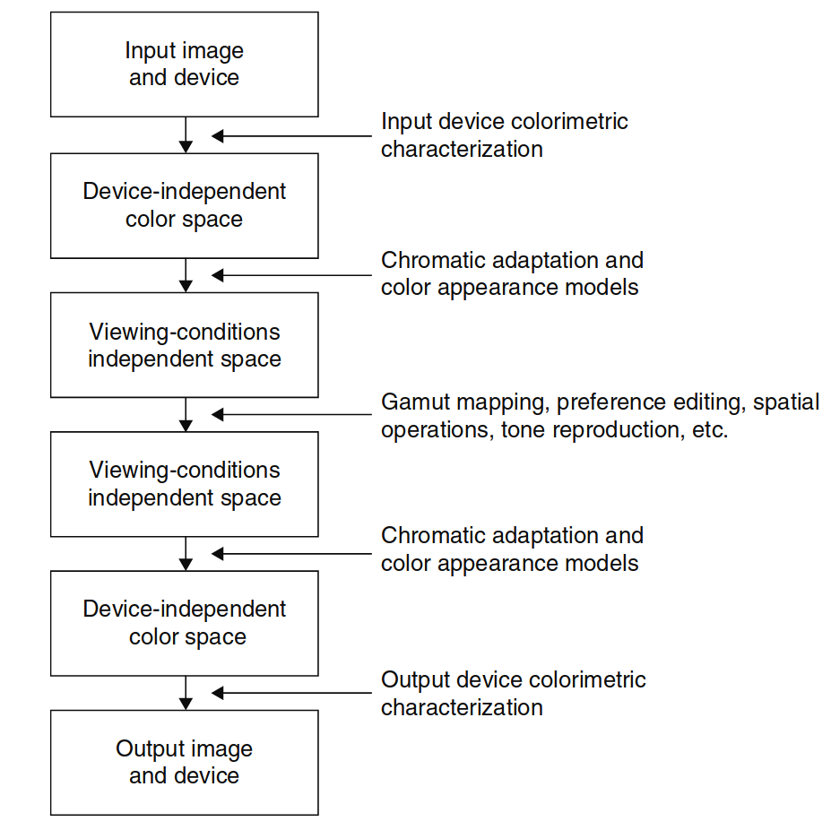
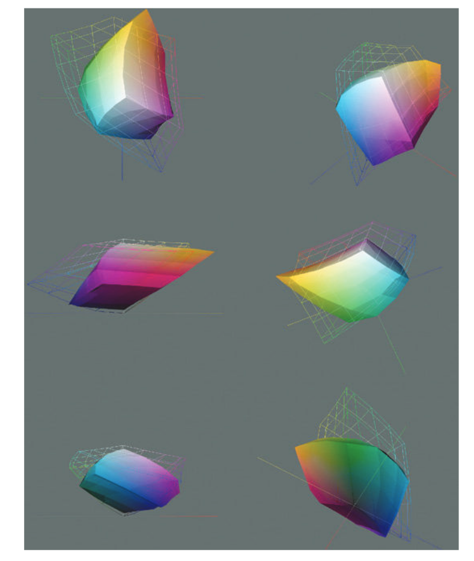
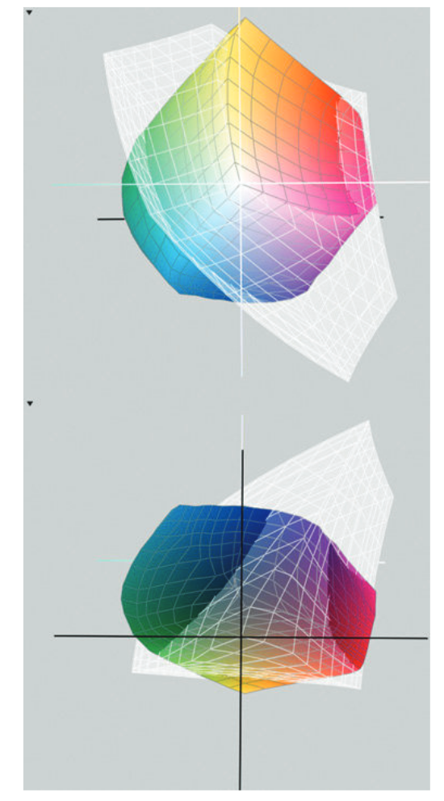
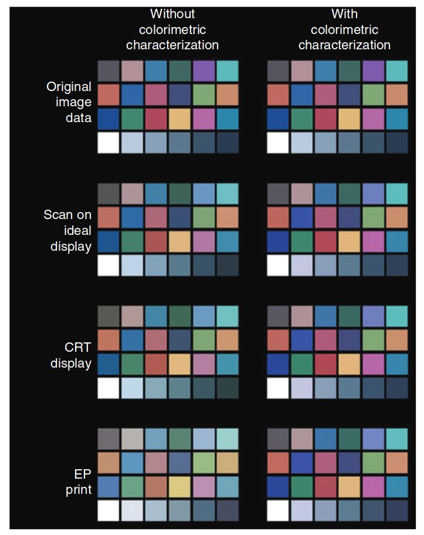
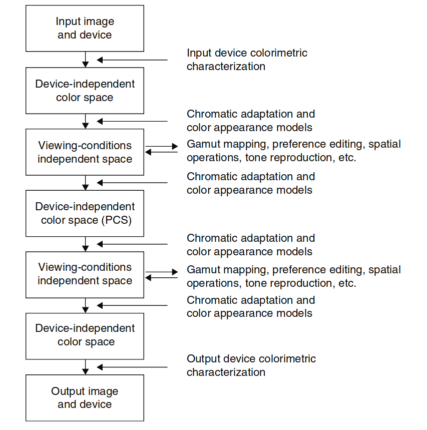

设备无关的颜色成像
背景与发展
在过去二十年中，随着对可靠设备无关色彩成像技术的强烈需求，色貌模型领域的科学能力得到了显著发展。色彩通常以与任何特定设备无关的坐标系来描述，并通过一系列转换将其表现为某个具体设备上的颜色。这一技术推动了色彩成像的标准化和设备无关性的进步，尤其是在色彩图像通常是在多种不同的观看条件下进行显示的情况下。
色貌模型的重要性与挑战
尽管已经认识到色貌模型对成功实现设备无关色彩成像至关重要，但至今还没有一个简单的解决方案能够完全解决这个问题。本书的前17章介绍了为解决这些问题所需的多种技术，而本章则概述了构建系统所需的基本概念。设备无关的色彩成像已经成为近年来众多科学家和工程师的研究焦点。
然而，这一领域的复杂性使得在单一章节内全面涵盖所有相关问题变得不可能。为了更深入地探讨这一领域，许多专门的书籍和研究资料相继问世（如Giorgianni和Madden 2008年、Green 2010年、Kang 1997年、Morovic 2008年、Reinhard等 2008年、Sharma 2003年等）。近年来，色彩管理系统已变得更加普及，许多面向高级用户的书籍也已出版（如Fraser等 2003年、Stone 2003年）。此外，Hunt的色彩再现教材（Hunt 1995年）也提供了传统与数字色彩再现的基本原理，具有重要的参考价值。
该领域的深入研究与应用
Sharma和Trussel（1997年）曾发布过一篇数字色彩成像领域的综述文章，其中包含了数百个参考文献。本文所述内容来源于早期的一系列工作（如Fairchild 1994年、1995年、1996年等）。
译者注：色貌模型的研究对于色彩管理系统（CMS）在图像处理中的优化至关重要，这些模型帮助系统在不同设备和不同环境下表现一致的色彩外观。
19.1 问题概述
基本色度学的应用
基本色度学的应用通过定义设备坐标（如RGB、CMYK）与成像系统检测或产生的颜色之间的关系，显著改善了开放色彩成像系统的构建。然而，重要的是要记住，跨不同成像设备匹配CIE三刺激值只是问题的一部分。如果一幅图像的CIE三刺激值与原图相同，那么在相同的观看条件下（即与计算三刺激值时的条件匹配），它将与原图在外观上相符。由于原图、复制品和中间图像通常不会在相同的条件下观看，因此有必要引入色貌模型，以便在每个阶段表示图像的外观。
设备无关色彩成像中的问题
色貌模型可以用来解决设备无关色彩成像中的一些问题，包括白点变化、亮度水平、周围环境、介质（观看模式）等。由于这些参数在不同的成像方式下通常会发生变化，因此色貌模型的必要性变得显而易见。色貌模型的引入使得系统能够在每个步骤中以可控的方式设置和使用，以保持或有意地操控图像元素的外观。因此，用户可以在LCD显示器上查看图像，按照自己的需求进行操作，然后利用色貌模型制作出能够准确再现LCD显示器上图像外观的打印件。
色貌模型的应用与限制
当然，完美地再现原始图像的外观并非总是可能或值得追求。色貌模型也可以在这些情况下发挥作用。一大问题是不同的成像设备能够产生不同范围的颜色，这就是它们的色域。例如，在LCD显示器上呈现的某个刺激会产生某种外观，但在某些打印机上可能无法生成能够复制该外观的刺激。在这种情况下，色貌模型可以用来以感知上有意义的方式调整图像，从而产生最佳的效果。
在其他情况下，观看条件可能会限制复制品的色域。例如，户外场景的摄影印刷品常常在人工照明下以显著较低的亮度水平观看，而不是在原始场景的亮度下观看。在较低的亮度水平下，无法产生原始场景中所见的亮度和色彩对比度。因此，通常会通过增加物理对比度来克服这种观看条件的变化。色貌模型可以用来预测这些效应，并指导系统设计以应对这些变化。
色貌模型在图像编辑中的优势
色貌模型在设备无关色彩成像中的另一个优势是在图像编辑领域。对于未经训练的用户来说，沿着感知维度（如明度、色调和色度）操作图像的颜色，比通过设备坐标（如CMYK）操作要直观得多。一个好的色貌模型可以改善用于操控这些维度的工具与用户在图像中实施的变化之间的相关性。
19.2 色彩再现的层次
Hunt（1970年，1995年）定义了六种不同的色彩再现目标：
光谱色彩再现
光谱色彩再现涉及原始图像或物体的光谱反射曲线的完全再现。Lippman方法和微分散方法（Hunt 1995）是两种不切实际的技术，已仅具有历史意义，它们勉强实现了这一困难的目标。现代色彩再现技术通过利用色彩的同色异谱现象（metamerism），采用RGB加法原色或CMY减法原色，从而除非原始图像使用相同的成像材料，否则无法实现光谱再现。最近开发的、目前正在开发的使用六种或更多墨水的印刷技术为光谱色彩再现提供了更好的近似，这可能在艺术再现等应用中非常有用（除了扩展输出色域）。
‘红枫’就是这类
色度色彩再现
色度色彩再现通过原始图像与再现图像之间的同色异谱匹配来定义，使得它们具有相同的CIE XYZ三刺激值。这将在原始图像和相同尺寸的复制品在相同的光源下观看时，重现颜色外观。然而，Hunt并不要求色度色彩再现中亮度级别相等。
精确色彩再现
精确色彩再现是指色度色彩再现的基础上，增加了亮度级别相等的约束条件。
等效色彩再现
等效色彩再现是在考虑原始图像和复制图像的照明颜色不同的情况下定义的。在这种情况下，精确再现CIE三刺激值将导致图像明显错误，因为没有考虑到色彩适应性。因此，等效色彩再现要求调整再现的三刺激值和亮度，以使其产生与原始图像相同的外观。这要求将原始图像和再现图像的观看条件差异纳入使用某种形式的色貌模型或色度适应模型。尤其在亮度级别差异较大的情况下，可能无法产生外观匹配，尤其是当目标是亮度-色彩匹配而不是明度-色度匹配时。
对应色彩再现
对应色彩再现通过忽略一定程度的亮度问题来处理这一问题。对应色彩再现是指调整再现图像，使其三刺激值符合当原始图像和再现图像在相同亮度水平下观看时所需的三刺激值。这消除了在昏暗的观看条件下尝试再现高亮度照明原图像的问题，反之亦然。可以将其视为明度-色度匹配的近似方法，如果假设（错误地）假设明度和色度在亮度变化中保持不变。由于明度和色度在亮度变化中比亮度和色彩度变化保持得更为恒定，这一假设可能不算太差，尤其是在实际的色域映射约束下。
优选色彩再现
优选色彩再现是指再现的颜色在外观上偏离原始图像的相等性，以便获得更愉悦的结果。这可能适用于消费者摄影等场景，在这些场景中，消费者希望打印的照片呈现与他们记忆中的颜色更接近的效果，例如皮肤色调、植被、天空、水体等。然而，正如Hunt（1970年）所指出的，“光谱色彩再现、色度色彩再现、精确色彩再现、等效色彩再现和对应色彩再现的概念提供了一个框架，这是讨论有意扭曲色彩再现的必要前提。”
19.3 修订版色彩再现目标
色彩再现的目标概述
Hunt提出的色彩再现目标很好地总结了色彩再现中遇到的问题，以及如何通过基本和高级色度学的概念来解决这些问题。值得注意的是，这些目标最初发布时，设备无关色彩成像的问题还未被广泛讨论（Hunt 1970）。对Hunt目标的略微重排和简化可以用来定义五个层次的色彩再现，这些层次为现代色彩成像系统提供了一个框架：
1. 色彩再现
色彩再现指的是能够提供生成色彩图形和图像的设备的简单可用性。通常，关于某种类型的色彩设备首次商用时会引发极大的兴奋。虽然这看似不是什么了不起的成就，但值得记住的是，具有合理色彩能力的个人计算机仅在不到20年内才开始普及。如今高质量的输入和输出设备也才是最近的事。当这些技术首次出现时，用户的兴奋点仅仅是他们现在可以在以前无法实现色彩的地方使用色彩。然而，这种“蜜月期”很快会过去，用户开始要求从他们的色彩成像设备中获得更多功能——他们希望设备能以某种控制和准确性再现色彩。这推动了开放系统技术向色彩再现的下一个层次发展。
2. 令人愉悦的色彩再现
令人愉悦的色彩再现是指通过调整成像设备和算法，使得消费者认为最终生成的图像是可以接受的。这些图像可能并非精确再现，甚至可能不是首选的再现，但它们看起来令人愉悦，并且大多数消费者认为是可以接受的。这一层次的再现通常可以通过试验和错误来实现，而不需要设备无关色彩成像的任何概念。在开放系统中获得令人愉悦的色彩再现的方法，类似于封闭成像系统历史上采取的策略，以实现类似的目标，或者在某些情况下，首选的色彩再现。对于那些没有原始场景或图像知识的观察者，令人愉悦的色彩再现可以作为一个合理的最终目标，因此他们的唯一期望就是得到一幅令人愉悦的图像。
肤色偏好，算是这类
3. 色度色彩再现
色度色彩再现包括对成像设备的校准和特性描述。这意味着，对于给定的设备信号，生成（或扫描）图像元素的色度坐标在合理的精度范围内是已知的。通过色度色彩再现，用户可以构建一个系统，在其中扫描图像，数据转换为色度坐标（例如，CIE XYZ），然后这些坐标被转换为适当的RGB信号以显示在LCD上，或转换为CMYK信号以输出到打印机。实际上，图像数据不必通过设备无关色彩空间进行转换。相反，可以从一个设备出发，通过设备无关空间，到第二个设备的完整变换，这样可以提高计算效率并最小化量化误差。这种系统使得原始图像的CIE三刺激值能够在任何输出设备上准确再现。这与Hunt对色度色彩再现的定义类似。为了实现色度色彩再现，必须有现成的设备和技术来进行输入和输出设备的色度特性描述和校准。商业上已经有多种此类技术和设备可供使用，但对于典型用户来说，色度色彩再现是否能够可靠实现仍然存在疑问。不幸的是，对于大多数用户而言，技术的现状仅停留在色彩再现阶段；色度色彩再现尚未可靠实现。色度色彩再现仅在原图和再现图像的观看条件完全一致时才有用，因为只有在这种情况下，三刺激值的匹配才代表外观匹配。当观看条件不同（通常是这样）时，就必须从色度色彩再现转到下一个层次。
4. 色貌再现
色貌再现需要使用色貌模型、原始图像和再现图像的观看条件信息，并对所有设备进行准确的色度校准和特性描述。在色貌再现中，原始图像的三刺激值被转换为外观相关指标，如明度、色度和色调，这一转换基于观看条件的信息，如白点、亮度、环境等。然后，关于要再现图像的观看条件的信息被用来将这些外观相关指标转换为所需的三刺激值，以便在输出设备上再现它们。色貌再现是必要的，以应对不同成像设备中存在的各种媒体和观看条件的差异。这类似于Hunt所定义的等效色彩再现，适用于明度-色度匹配。色貌再现尚未成为商业现实，也许对于典型用户来说它无法实现。然而，即使合理的色貌再现成为可能，在某些情况下，用户仍然希望获得与原图外观不完全匹配的再现。这些情况进入了色彩偏好再现的领域。
5. 色彩偏好再现
色彩偏好再现涉及故意操控再现图像中的颜色，使结果对用户来说比精确的外观再现更为可取。目标是在给定的介质和主题下生成最佳的再现效果。这类似于Hunt对优选色彩再现的定义。虽然色彩偏好再现的目标通常被认为是文化依赖的，但几乎没有任何已发布的数据支持这一结论（Fernandez等，2005年）。需要注意的是，为了在开放系统中实现每个层次的再现，必须首先实现较低的层次。总结来说，这五个层次包括简单的色彩再现、令人愉悦的色彩再现、三刺激值相等、外观属性相等以及操控外观属性以“改善”结果。在封闭系统中，技术不需要通过这五个层次的发展。这是因为图像数据的路径在整个过程中是被定义和控制的。例如，在彩色摄影中，胶片的感光度、染料、处理程序和印刷技术都是明确定义的。因此，可以设计出用于彩色负片的胶片，以在没有色度或色貌再现能力的情况下生成令人愉悦或优选的色彩再现，因为处理和印刷步骤已得到明确定义。在彩色电视中，类似的系统也存在，具有标准的相机感光度、信号处理和输出设备设置。在开放系统中，输入、处理、显示和输出设备可以构建并共同使用的组合数目是不可处理的。每个子系统的制造商无法预测可能与其一起使用的所有设备组合。因此，唯一可行的解决方案是让系统中的每个设备都经过五个层次的发展，以便色度或色貌数据（或获取这些数据所需的信息）可以从一个设备传递到下一个设备，这一过程被称为设备无关色彩成像。
19.4 通用解决方案
设备无关色彩成像的概述
图19.1展示了设备无关色彩成像的一般过程流程图。在图表的顶部是原始图像，通过某个输入设备表示。（请注意，这个“输入”也可以来自显示设备，如CRT。）然后，输入设备的色度特性描述被用来将设备坐标（如RGB）转换为色度坐标，例如CIE XYZ或CIELAB，这些坐标被称为设备无关色彩空间，因为这些色度坐标不依赖于任何特定的成像设备。
第一步：设备坐标转换为色度坐标
第二步，是应用色度适应和/或色貌模型，将附加的原始图像观看条件信息应用于色度数据，以便将图像数据转换为与外观相关的维度，如明度、色调和色度。这些坐标，已考虑了特定设备和观看条件的影响，称为观看条件无关空间。此时，图像纯粹通过其原始外观进行表示。
适合进行色彩操作的阶段
这是进行图像颜色操作最合适的时刻。这些操作可能包括色域映射、偏好编辑、色调再现调整、空间缩放操作、某些形式的误差扩散等。此时，图像已经在其最终形式下准备好进行外观再现。
反向过程与色貌模型的作用
现在，整个过程必须被逆转。这突出了可逆色貌模型的作用。输出图像的观看条件，以及最终图像的外观数据，将在反向色貌模型中使用，以便从观看条件无关空间转换回设备无关色彩空间，如CIE XYZ三刺激值。这些值与输出设备的色度特性描述一起，用于转换为生成所需输出图像的设备坐标（例如CMYK）。
实施的计算资源要求
以下部分提供了该过程每一步的更多细节。需要注意的是，如上所述，设备无关色彩成像过程的字面实现需要大量的计算资源。例如，为了避免严重的量化误差，图像处理通常在浮点图像数据上进行，并在中间色貌空间中使用浮点计算精度。虽然这种方法在色彩成像研究中是可接受的，但对于大多数商业色彩成像系统，特别是那些限制为24位每像素色彩数据的系统，这并不实际。在这种情况下，上述过程用于构建系统和算法，而实现则依赖于在每通道8位的LUT中进行多维插值。
计算机图形行业的差异
有趣的是，计算机图形行业与色彩成像/出版行业相比，通常使用浮点数和更高精度的整数图像数据。也许这两个领域的融合将解决一些历史上的计算问题和限制。
成功的应用案例
这种通用方法在经过仔细实施时，已被多次证明有效。例如，Fairchild等人（2008年）能够通过遵循上述技术并进行仔细的设备特性描述，使来自不同制造商的不同数字相机在视觉上相匹配，基于心理物理实验的结果。虽然这在严格意义上是可行的，但大多数制造商并不追求这一结果，因为他们更愿意让他们的系统具有可区分的“特征外观”，而不是与竞争对手不可区分。

图 19.1：设备无关色彩成像的概念过程流程图。
19.5 设备校准与特性描述
设备校准
设备校准指的是将成像设备设置为已知状态。这可能代表着CRT/LCD显示器的某个白点、增益和偏移，或者打印机的密度与驱动信号之间的某种关系。校准确保设备能够在每天和设备间产生一致的结果。然而，设备校准的完成并不需要了解设备坐标和输入或输出图像的色度坐标之间的关系。要获得这类信息，必须进行设备的色度特性描述。色度特性描述是指建立设备坐标和设备无关色彩空间之间的关系——即图19.1中的第一步。
设备校准通常是制造商的任务，而非用户的任务，且其技术高度依赖于设备的技术。因此，除了强调其重要性之外，设备校准不会进一步讨论。如果从日常到日常或从设备到设备都需要一致的结果，则必须进行细致且频繁的设备校准。在校准与特性描述之间可以做出权衡。如果无法进行精确的校准，则可以通过频繁的特性描述来实现准确性。如果能够提供一个非常好的校准程序，那么只需进行一次色度特性描述即可，只要设备能够频繁校准。
设备特性描述的三种方法
设备特性描述有三种主要方法：
- 物理建模
- 实证建模
- 详尽测量
当然，也有结合一种或多种这些技术的程序。在所有情况下，通常使用特性描述来构建一个三维查找表（LUT），并结合插值程序处理遇到的大量图像数据。
物理建模
物理建模涉及构建数学模型，将输入或输出图像元素的色度坐标与用于驱动输出设备的信号或来自输入设备的信号相关联。可以为各种成像设备推导出此类模型，但其难度不一。扫描仪的物理模型可能包括两步：首先对亮度或吸光度信号进行线性化，然后第二步将信号转换为CIE三刺激值。根据扫描仪的设计，可能需要了解被扫描材料的物理属性。如果扫描仪设计为色度计而非具有任意RGB响应特性，则可避免这一需求。CRT显示器的物理模型涉及将驱动电压转换为相应的RGB荧光亮度的非线性变换，接着进行线性转换得到CIE XYZ三刺激值。（请注意，LCD显示器并不固有地具备相同的物理模型，但它们通常被设计成模仿CRT显示器。）硬拷贝输出设备的物理模型需要将驱动信号转换为染料、颜料或墨水的浓度，再通过色彩混合模型预测光谱反射率或透过率，然后用于计算CIE XYZ三刺激值。
物理设备模型的优势是其稳健性，通常只需较少的色度测量即可完成设备特性描述，并且如果成像系统的某个组件发生更改，重新特性描述相对容易。缺点是模型通常较为复杂，需要推导，并且实现起来可能复杂。物理模型常用于显示器特性描述。
实证建模
实证建模涉及收集大量数据，然后统计拟合设备坐标与色度坐标之间的关系。这些模型通常直接转换到CIELAB坐标，以避免在CIE XYZ三刺激值中出现量化问题。实证模型通常是高阶多维多项式，或者是具有显著复杂性的神经网络模型。实证模型需要比LUT技术更多的测量，但少于物理模型。实证模型在设备色域边缘附近常表现不佳，产生较大的系统性误差。由于实证模型与成像设备的物理性质无关，因此每次系统组件发生更改时，必须重新创建这些模型。实证模型通常用于扫描仪的特性描述。
详尽测量
最后一种特性描述技术是对设备色域进行全面的输出测量。（对于扫描仪的特性描述，可以收集大量已知输入颜色的信号。）通常，输出设备驱动信号会进行像9×9×9的采样，并进行色度测量，总共得到729次测量。对于图像与图像或设备与设备之间的重复性较差的设备，可能会使用更多的测量数据。然后，必须非线性插值这些色度数据，生成一个高密度（例如33×33×33）的LUT，用于通过多维插值处理图像数据。
此类技术的缺点包括需要大量测量，非线性数据的插值困难，如果设备的任何方面发生变化，必须重新进行整个过程，并且通常难以创建所需的逆向解。详尽测量技术的优势是它们不需要了解设备的物理原理，因此在许多应用中得到青睐，尤其是在打印机特性描述中。
色度测量的类型
各种成像设备的特性描述需要不同类型的色度测量。CRT或LCD显示器的特性描述需要对荧光体的色度进行光谱辐射或色度测量，以推导RGB到XYZ的转换，和通过对每个通道的非线性传输函数进行辐射或光度学测量来推导每个通道的非线性传输函数。打印机和其他输出设备需要光谱反射率或透过率的光谱测量，以描述设备的色彩物质或推导各种光源的色度坐标。
扫描仪和数码相机需要对其通道的光谱响应度进行光谱辐射测量或实证估算。还需要对照明系统进行光谱辐射数据采集。通常，通过扫描一些已知特性化的输入目标，收集扫描仪数据，以推导扫描仪信号与色度坐标之间的关系。
色度测量中的其他问题
色度测量中常被忽视但需要关注的三个问题是：闪光、同色异谱现象和荧光。
-
闪光：闪光通常在设备特性描述中未被考虑，因为这些测量是通过专门的仪器和特殊准备的样品进行的，而不是在设备实际观看环境中进行的。闪光的光谱能量分布和强度必须测量并添加到设备的色度特性描述中。
-
同色异谱现象：同色异谱现象会给输入和输出设备带来困难。在输入设备上，同色异谱现象结合非色度传感器响应性可能会破坏所有可靠的色彩再现希望。
-
荧光：荧光材料的色度是一个显著的挑战，因为材料发射的能量与照明源的入射能量有关。因此，使用荧光材料时必须使用与色度计算中使用的光源相似的照明进行测量。
19.6 色貌模型的必要性
设备无关色彩成像与色貌模型
图19.1所描述的设备无关色彩成像过程突出了色貌模型的必要性。色貌模型的需求主要有两个方面：图像编辑和观看条件转换。
图像编辑中的需求
图像操作如色彩偏好再现和色域映射，最好是在色貌模型中感知上显著的维度（如明度、色度和色调）中进行。使用色貌模型可以使这些操作更加直观和有效，尤其是当我们希望对图像颜色进行感知上相关的调整时。
观看条件转换中的需求
显然，从一个观看条件集（例如，白点、亮度、环境、介质）到另一个观看条件集的色度坐标转换，必须依赖色貌模型。没有色貌模型的情况下，唯一能避免其使用的方式是规定一套非常强的约束条件：原始图像和再现图像必须在相同的介质下，在相同的观看条件下，通过相同的色域，并且目标是色度色彩再现。在这种严格约束的条件下，色度再现和色貌再现是相同的。
19.7 观看条件的定义
色貌模型中的观看条件问题
在设备无关色彩成像中实施色貌模型的一个关键未解决问题是观看条件的定义与控制。即使色貌模型非常完美，如果实际的观看条件与模型计算时所用的条件不一致，其效用也会大打折扣。（例如，CIE光源与其物理模拟器之间的同色异谱问题便是这一困难的显而易见示例。）控制观看条件的困难之一在于观看场的定义。Hunt（1991b）在定义观看场的各个组成部分方面做了最为详细的工作。然而，即使有Hunt扩展的定义，仍然很难决定在典型的观看条件下，复杂图像显示时哪些部分应视为近距离视野、背景和周围环境。例如，图像的背景是紧挨着图像边缘的区域，还是应视为图像中每个单独元素周围的区域？后一种定义可能更为合适，但它需要进行更为复杂的逐图像计算，这在实际中往往是不可行的。
观看条件的定义与一致性
无论观看条件的具体方面如何定义，确保在所有图像变换中保持一致性非常重要，以避免由于使用色貌模型而引入偏差。作为一种实际的定义，图像的背景应定义为图像边界周围的区域，周围环境应定义为观看环境的其余部分；然而，这一背景的定义与Hunt在第7章中的定义不同。在图像再现中，近距离视野的定义并不必要，因为原始图像和再现图像中各个元素的空间关系是恒定的。近距离视野在希望在完全不同的上下文中再现图像元素的色貌时变得重要（例如，徽标颜色、商标颜色）。
即使严格定义了观看场的各个组成部分，成功的设备无关色彩成像仍然需要精确控制观看条件。如果用户不愿意仔细控制观看条件，他们就应该预期色彩再现将是不可预测的。成功的色貌再现所需精确控制的观看条件参数包括：
- 光源的光谱功率分布
- 亮度水平
- 周围环境的颜色和相对亮度
- 背景颜色和相对亮度
- 图像闪光（如果未在设备特性描述中已经考虑）
- 图像大小和观看距离（即，固体角度）
- 观看几何
此外，观察者必须在足够的时间后做出对不同图像的关键判断，以允许完全适应各自的观看条件。Braun等人（1996年）展示了控制观看条件对于跨媒体图像比较的重要性。他们得出的结论是，最佳的关键判断技术是连续双眼观看，即观察者首先用双眼观看一个图像显示，然后切换到另一个显示，允许大约一分钟的时间适应新的观看条件。安排是每次只能观看一个图像显示，并且每次从一个显示切换到另一个显示时都需要一分钟的适应时间。不幸的是，最常见的技术是同时双眼观看，即在不同介质和白点的条件下，原始图像与再现图像并排同时观看，这会产生不可接受的结果。在这种情况下，观察者的色彩适应状态无法可靠预测，因为它取决于观察者观看每个图像的时间比重。
观看条件控制的优化与计算优势
一般来说，最佳的结果将是假设一个单一的中间适应点。然而，这种选择的结果是，在并排观看时再现与原图一致，但单独观看时则看起来非常怪异。例如，如果一个显示器的白点为9300 K，而通过D50模拟器观看的再现打印品要求与之并排显示匹配，则生成的打印品将具有整体的蓝色偏移。当这个打印品单独在D50模拟器下观看时，它会显得异常偏蓝，被认为是匹配不佳。Katoh（1995年）研究了不同介质图像的同时观看问题。然而，如果采用连续观看技术并给予足够的适应时间，则优秀的中性平衡9300 K CRT图像将能够与通过D50模拟器观看的中性平衡打印图像相匹配。因此，通过适当的观看程序，可以获得色貌匹配和高质量的单幅图像。
一旦观看条件得到了适当的定义和控制，通过谨慎的预计算程序可以获得一些计算优势。这些程序依赖于将色貌模型的实施划分为只需对每个观看条件计算一次的部分，以及需要对每个图像元素计算的部分。最有效的实施程序是预计算依赖于观看条件的模型参数，然后将这一数据数组用于每个像素或LUT元素上执行的单个色貌模型计算。例如，当使用RLAB模型来处理白点和亮度变化时，且周围环境保持不变，观看条件的变化可以预计算成一个3 × 3矩阵转换，应用于原始图像的CIE XYZ三刺激值，以确定再现图像的三刺激值。这是一种显著的计算简化，使得用户能够互动地更改色貌模型中的设置，从而选择图像将被观看的光源。
19.8 观看条件无关色彩空间
设备无关色彩空间的概念
设备无关色彩空间作为一种基于CIE色度学的色彩表示方法，已经被广泛理解为不依赖于任何特定成像设备的色彩表示。（或者，设备无关色彩空间也可以定义为从CIE坐标到某些标准化设备坐标的转换（Anderson et al., 1996），或者可以通过色貌概念尝试规范化或转换照明条件（Oleari et al., 2013））。引入色貌模型（如图19.1所示）到这一过程，创造了“观看条件无关色彩空间”的额外概念。
观看条件无关色彩空间的扩展
观看条件无关坐标将CIE色度学扩展到一个层次，用来指定图像元素的色彩外观，这一层次不依赖于外部约束。这种表示法编码了图像元素的感知相关属性（例如明度、色度和色调）。这种表示法有助于对图像颜色进行必要的编辑调整，以实现色彩偏好再现和色域映射。
观看条件的影响：感知色域限制
值得注意的是，观看条件本身可能会引入“感知色域限制”。例如，在高亮度条件下观看的某些图像元素的明度、色度和色调，无法在低亮度条件下的图像中再现。换句话说，某些色彩感知在特定的观看条件下根本无法产生。“感知色域限制”的局限性并不会减少色貌模型的效用。事实上，这些限制只能通过色貌模型可靠地定义。
认知科学中的相关概念
有趣的是，观看条件无关色彩空间的概念在认知科学领域也有相应的联系。Davidoff（1991年）提出了一种物体颜色表示模型，最终将颜色编码为输出词汇，即我们用来描述色彩外观的词汇。这样的表示法可以被视为一个高级色貌模型，在这个模型中，颜色是通过名称来指定的，正如人们所做的，而不是通过数学上必要的五个色貌属性的尺度来表示。
19.9 色域映射
色域映射问题概述
如果建议通过使用可靠、准确的色貌模型来解决设备无关色彩成像中的所有问题，那将是误导性的。即使有一个完美的色貌模型，色域映射这一关键问题依然存在。开发用于自动化色域规格和不同设备及意图的色彩映射的强大算法，仍然是跨媒体色彩再现中最重要的未解问题之一（Fairchild 1994a）。
色域的定义
色彩成像设备的色域定义为设备能够生成的颜色范围，这些颜色在某个适当的三维或更多维的色彩空间中被指定。（需要重申的是，色域必须在三维色彩空间中表达，因为像色度图中常见的二维表示是误导性的。）指定设备色域的最合适空间是在色貌模型的坐标中，因为观看条件对感知色域的影响可以在这个模型中得到恰当的表示。例如，只有完整的色貌模型才能显示，当亮度降低时，打印机的色域收缩为0体积！通常，设备色域应通过所选色貌模型中的明度、色度（或饱和度）和色调维度来表示。然而，在某些情况下，使用亮度、色彩度和色调来表达色域可能更为合适。例如，投影系统或其他容易受环境闪光影响的显示器，绝对亮度级别对感知的色彩图像质量有显著影响。
图19.2：设备色域的三维表示
图19.2展示了两种设备色域的三维模型。这些色域是在CIELAB色彩空间中绘制的。线框模型表示了典型显示器的色域，该显示器使用SMPTE荧光体和D50白点。实心模型表示了典型染料扩散打印机在CIE光源D50下的色域。需要注意的是，CRT显示器的色域在浅色区域超过打印机，而打印机的色域在某些较深的颜色区域超过CRT显示器。这个三维色域表示有助于澄清一些关于色域的误解。例如，图19.2展示了色域之间不重合的程度，以及打印机色域常常扩展到CRT色域之外。通常假设CRT色域明显大于大多数打印机色域，这通常是因为在色度图中仅考察二维色域边界，而忽略了色彩空间的第三维。

图 19.2：在CIELAB色彩空间中，两个设备色域的三维表示。线框模型表示典型CRT显示器的色域，实心模型表示典型染料扩散打印机的色域。
图19.3：色域比较
图19.3展示了喷墨打印机色域与典型显示器色域的比较。此示例使用2011年左右的典型桌面操作系统中的色彩管理工具绘制。图像显示了CIELAB色彩空间的色域重叠，彩色轮廓代表典型的桌面喷墨打印机，而透明灰色轮廓则代表sRGB色域。上方的图像显示的是CIELAB空间的顶部视图，而下方的图像则是从下方看到的视图。

图 19.3：在CIELAB色彩空间中，喷墨打印机色域与典型显示器色域的比较。上图为从CIELAB空间上方视图，下图为下方视图。
色域映射的应用与挑战
色域映射是调整图像中颜色的过程，以便它能在给定设备上正确表示（Morovic 2008）。例如，可能希望使用LCD显示器再现打印品上的深色饱和青色。如果LCD无法生成所需的颜色，则必须将图像元素调整到LCD色域范围内的合适颜色。相反的问题可能是，某个设备能够生成比原始图像中更多的饱和颜色。如果没有充分利用输出设备的色域，用户可能会对结果不满，因为他们知道设备可以生成更广泛的颜色。因此，图像颜色也可能需要调整以填充色域。
色域映射问题可以描述为在目标颜色落在设备色域之外时进行色域压缩，而在图像颜色未完全利用设备色域时进行色域扩展。适当的色域扩展需要完全了解源图像的色域，并进行计算密集型的图像依赖性处理。因此，它可能在某些实际系统中无法完全实现。这有点与常见的看法相悖，认为色域映射仅仅是色域压缩的问题。相反的色彩调整代表了同样重要，甚至是更具挑战性的问题。
色貌模型在色域映射中的重要性
显然，色貌模型是指定色域并执行映射转换的最佳工具，因为操作可以在感知上具有意义的维度上进行。虽然有多种色域映射技术已经提出，但一种可以广泛应用的通用自动化算法仍未开发出来，而且可能不会被广泛接受。从色彩摄影领域（Evans et al. 1953, Hunt 1995）中可以借鉴经验，最佳的再现通常被认为是那些保留原始色调、将明度映射以保持相对再现和平均水平，并将色度映射以保持各图像元素之间色度关系的图像。显然，这样的指导方针会被特定的色彩偏好所覆盖。以这些方法为基础，考虑其他实际约束，色域映射问题已经被Stone等人（1988年）、Gentile等人（1990b年）、Hoshino和Berns（1993年）、Wolski等人（1994年）以及Montag和Fairchild（1996年，1997年）讨论。
色域映射的解决方案
尽管色域映射问题的通用解决方案尚未得出，但可以提出一些基本概念。对于图像作品，可以通过首先线性缩放明度，使白点和黑点匹配，并保持中灰（L* = 50）恒定，从而获得一个合理的色域映射解决方案。接着，色调保持不变，而色度则在色域边界处进行裁剪以压缩，或进行线性缩放以扩展。另一种方法是将色域外的颜色裁剪到色域边界，并在统一色彩空间内以最小距离裁剪，同时消除恒色调约束。显然，这些方法过于简单，且未必产生最佳效果（Braun和Fairchild 1999a,b, Montag和Fairchild 1996, 1997）。
对于其他图像类型，如商业图形，可能更适合其他色域映射策略。其中一种方法是保留图像元素的色度，并在必要时更改色调，以保持商业图形图像的影响和意图。这些差异强调了理解图像意图在再现中的重要性。根据给定图像的预期应用，最佳的色域映射策略将有所不同。图像作品和商业图形之间的差异显而易见。然而，即使是在图像作品中，针对不同应用的色域映射策略也可能有所不同。例如，科学或医学图像的最佳策略将不同于精美艺术作品的再现策略，而后者又不同于消费者拍摄的快照的再现策略。
19.10 色彩偏好
色彩偏好的挑战与解决
在解决了色貌和色域映射问题后，仍然会有一个最后的色彩操作：将颜色映射为观察者在特定应用中偏好的颜色。因此，准确的色彩再现可能不是最终目标，而是实现该目标的一个必要步骤。偏好再现的色彩映射应与色域映射同时处理，因为这两个过程故意迫使不准确的色彩再现，并且肯定会互相影响。
像色域映射一样，色彩偏好映射是依赖于意图或应用的。在一些应用中，如科学和医学成像，准确的色彩再现可能是不可妥协的目标。在图像艺术成像中，某些物体颜色的偏好再现（例如天空、皮肤、植物）可能偏向这些物体的理想记忆色。在抽象图像中，如商业图形，偏好色彩再现可能更多地依赖于设备能力或传达的信息，而不是原始图像的颜色。
文化对色彩偏好的影响
色彩偏好再现的一个附加因素是文化对色彩偏好的依赖性。在色彩再现行业中，已经有充分的证据表明，销售到不同文化中的偏好色彩再现系统具有不同的色彩能力，且不能在文化之间互换而不导致销售损失。虽然这种文化偏好似乎存在，但它们并没有得到充分的（公开）记录，并且其原因也没有得到很好的理解。许多此类效应已经成为民间传说，可能只是历史原因导致的。例如，某些客户可能对某些色彩再现能力有强烈偏好，因为他们已经习惯了这些特性，并认为任何变化都是负面的。这样的偏见无疑是文化性的，但它们是学习到的反应。这一点表明，大多数，甚至是所有，文化偏好中的色彩再现偏见在某种程度上都是通过学习形成的（这也是文化的基本定义）。关于文化偏见的主题无疑是一个有趣的议题，值得进一步的研究与探索。
色彩偏好的个体差异
Fernandez和Fairchild（2002年）以及Fernandez等人（2005年）在一项最新的研究中未能发现显著的文化偏见。他们发现，个体偏好的差异大于文化平均水平的变化。特别有趣的是，如果偏见确实存在，是否可以追溯到历史上，看看它们是否随通信和图像信息交换的进步而发生变化。
文化依赖性的色彩偏好再现概念激发了若干有趣的可能性。然而，个体之间的色彩偏好再现差异也非常显著。事实上，尽管文化之间可能存在显著的色彩偏好差异，但几乎可以肯定的是，任何特定文化中个体的色彩偏好范围要大于文化间平均水平的差异（这在Fernandez等人2005年的研究中得到确认）。只需要尝试为两个观察者制作一个理想的图像，就能理解这种偏好差异的规模。
色貌模型的潜力
色貌模型还可以使自动化技术能够识别图像中的颜色和物体区域（Jetsu et al., 2011）。通过识别这些区域，可能会使高质量的自动化色域映射和偏好调整变得更加可行。
译者注：色彩偏好的文化依赖性及个体差异在色彩管理系统（CMS）中尤为重要，尤其是在全球化的多文化环境中，如何根据不同用户的偏好来调整图像的色彩再现，已成为色彩成像领域的重要研究课题。
19.11 逆向过程
逆向过程概述
到目前为止，图19.1流程图中将图像数据移动到中间部分的过程已被描述。一旦在这个层次的所有处理完成，图像数据在概念上就处于一个抽象空间，代表了要在输出图像上再现的外观。此时，整个过程必须反向进行，将数据从观看条件无关色彩空间移动到传统的设备无关色彩空间，再到设备坐标，最终生成再现图像。
反向过程的重要性
这一过程突出了在前向和反向两个方向工作的重要性，以便成功地创建图像再现。显然，使用具有可逆性的色貌模型和设备特性描述将大大简化整个过程。其主要优势在于，这些模型使用户能够操控成像设备上的设置或改变观看条件，同时仍能在合理的时间内重建过程并生成图像。
可逆模型的优势
如果模型必须通过迭代反转或通过详尽的测量重新创建，那么用户将完全无法调整任何设置以获得期望的结果，从而使得这一过程变得不可行。借助可逆的色貌模型和设备特性描述，用户能够在实时修改设置和环境条件时，保持图像质量和色彩一致性。
19.12 示例系统
设备无关色彩成像示例
前面的讨论提供了设备无关色彩成像过程的概述。接下来，考察一个示例系统，展示通过这种过程可以获得的结果。色貌模型在过程链中的影响已在第17章中展示（图17.6、图17.7和图17.8）。图19.4展示了使用高质量设备特性描述时能够获得的色彩再现质量，并与没有任何额外校准或特性描述的设备所获得的再现进行比较。
示例系统概述
该示例系统包括适用于家庭计算机市场的典型高端图像输入、处理、显示和打印设备。图19.4中的图像是各个步骤中实际获得的颜色的合成表示。虽然这些图像是合成的表示结果，但颜色是准确的，代表了在实际系统中获得的结果。原始图像假定为一张Macbeth ColorChecker® 色卡的摄影打印件（McCamy等，1976年），如图19.4的第一行所示。图像使用600 dpi的平板扫描仪，量化为每通道10位。
第二步：扫描图像的准确性
图19.4的第二行展示了在理论理想显示器上表示扫描图像的准确性（即显示器不引入额外的误差）。左侧的图像展示了没有色度特性描述（仅进行伽玛修正）时的结果，而右侧的图像则展示了使用像Berns和Shyu（1995年）所描述的特性描述技术获得的准确性。
第三步：显示器的色彩准确性
下一步是通过高分辨率CRT显示器进行显示，如图19.4的第三行所示。左侧的图像展示了假设显示器和视频驱动程序设置为标称定义的系统伽玛值（例如，对于早期的Macintosh系统为1.8，对于Silicon Graphics系统为1.3–1.5，对于Windows系统为2.2–2.5）。假设任何白点的偏差都由于色度适应被忽略。右侧的图像展示了通过使用Berns（1996年）描述的特定显示系统特性描述技术获得的准确性。请注意，这些图像包括了扫描仪和显示器的误差，因为整个系统正在构建过程中。
第四步：打印输出
最后一步是将图像打印到600 dpi的彩色激光打印机上。左侧的图像展示了使用默认打印机驱动程序和PostScript®打印机描述（PPD）文件时的结果。右侧的图像展示了通过使用9×9×9色域采样的测量技术构建三维LUT后获得的结果。同样，这些最终图像展示了经过整个成像系统传播的误差。显然，仔细的色度特性描述可以显著改善这些结果。
技术限制与潜力
不幸的是，当前的技术状态不允许典型用户达到这种色度准确性水平。然而，潜力是存在的。第19.12节描述的ICC实现提供了一个框架。仍需实施的是生产能够准确校准和特性描述的设备，这些设备可以在工厂中进行稳定的校准和描述，且典型用户无需担心自己对设备进行校准和描述。

图 19.4：在典型桌面成像系统中，使用和不使用色度校准与特性描述的色彩再现准确性示例。
19.13 ICC 实现
ICC框架与设备无关色彩成像
ICC（1996年）为实现设备无关色彩成像过程提供了一个更普遍实施的框架，通过他们指定的ICC配置文件格式来实现，如图19.1所示。该联盟由大约50个涉及色彩再现软件、硬件、计算机系统和操作系统的公司和组织组成。配置文件格式是一种数据结构规范，可以用来描述设备特性（包括模型和LUT）、观看条件和渲染意图。此类配置文件可以与各种成像设备配合使用，或与图像连接，以促进图像数据的色度历史信息交流。
ICC 配置文件的作用
配置文件格式提供了一个结构，用于传递所需的数据，使得配置文件可以在不同的计算机、操作系统和/或软件应用程序之间轻松交换。虽然ICC配置文件提供了实现设备无关色彩成像所需的数据，但软件和硬件开发者必须开发相应的软件来利用这些信息完成整个系统的实现。这样的软件被称为色彩管理系统（CMS），并且越来越多地集成到操作系统中。
设备特性描述与色域映射的需求
开发准确描述各种设备、外观变换、色域映射变换和色彩偏好映射的配置文件的需求也显得非常重要。基于ICC配置文件的系统质量将取决于色彩管理软件的能力以及配置文件的质量。在高质量实现的情况下，ICC配置文件规范为优秀结果提供了框架和潜力。ICC配置文件格式、色彩管理系统和其他兼容软件的构建与实施是一个不断发展的过程。当前的状态和配置文件格式文档可以在ICC官方网站（www.color.org）上找到。ICC文档还包含关于其他与设备无关色彩成像应用相关的国际标准化活动的信息。
配置文件连接空间
ICC规范的一个重要概念是配置文件连接空间（Profile Connection Space，PCS）。这一概念通常被误解，因为配置文件连接空间的确切定义和实施仍然是ICC内部讨论和辩论的议题。为了了解这个话题，应该参考最新的ICC文档。
基本上，配置文件连接空间由一组特定的观看条件参数定义，这些参数用于建立参考观看条件。配置文件连接空间的概念是，给定的输入设备配置文件将提供必要的信息，将设备坐标转换为设备无关的色彩规范（如CIE XYZ或CIELAB），这些规范代表了原始图像数据在配置文件连接空间的观看条件下的外观（或者从CIE规范的配置文件连接空间到输出设备配置文件的设备坐标）。
参考观看条件示例
作为一个示例，ICC配置文件连接空间参考观看条件的原始定义如下：
- 参考再现介质：理想化的打印品，Dmin = 0.0
- 参考观看环境：ANSI PH2.30标准展台
- 周围环境：正常照明
- 光源颜色：CIE光源D50
- 照度：2200 ± 470 lux
- 色度学：理想，无光晕测量
- 观察者：CIE 1931标准色度观察者（隐含）
- 测量几何：未指定
配置文件连接空间与色彩管理的应用
例如，假设有一个系统，其中数字相机已针对D65光源进行校准，显示器的白点为9300 K，而打印机的输出则在D50光源下观看。在这种情况下，数字相机的输入配置文件必须提供必要的信息，首先将从相机设备坐标（例如RGB）转换为CIE三刺激值（针对D65光源），使用典型的设备校准和特性描述技术。接着，D65光源的三刺激值和图像捕捉的观看条件需要通过某种色貌模型转换为配置文件连接空间的对应三刺激值（如D50光源等）。执行此转换所需的所有信息都必须包含在输入设备配置文件中。
显示器将有一个输出设备配置文件，包含必要的信息，将配置文件连接空间中的三刺激值转换为显示条件下的对应三刺激值（9300 K白点、暗环境等），然后通过设备特性描述转换为显示所需的RGB值。当在色彩管理系统中实现时，两个设备配置文件将被连接，使得来自相机的RGB数据直接转换为显示器的RGB数据，而无需经过多个中间空间，甚至无需进入配置文件连接空间。
打印机的设备配置文件
假设打印机已根据与配置文件连接空间匹配的观看条件进行设置和特性描述，打印机的输出设备配置文件只需包括从D50光源CIE坐标到设备坐标的转换信息即可。
色彩偏好模型的挑战
一个有趣的“特点”是，即使在通常不需要色貌模型的情况下，设备配置文件仍需提供从设备坐标到配置文件连接空间的转换。例如，如果相机设置为D65光源，显示器设置为D65白点，那么通过色貌模型进行的转换就没有意义，因为我们不需要通过D50配置文件连接空间进行转换，然后再返回到D65显示。由于色彩管理系统会连接配置文件，这并不构成问题，只要达成一致的色貌模型即可。ICC正在朝着这一目标努力，但目前还没有为ICC配置文件构建推荐的单一色貌模型。因此，输入设备配置文件构建者可能会实现Hunt模型进入配置文件连接空间，而输出设备配置文件构建者可能会实现RLAB模型从配置文件连接空间输出。
图19.5：配置文件连接空间的示意图
配置文件连接空间的概念完全兼容图19.1所描述的过程。唯一需要添加的步骤是从观看条件无关色彩空间转换到配置文件连接空间的设备无关色彩空间（CIE XYZ或CIELAB）。此时，数据从一个设备到另一个设备的概念性交换发生。最后，从配置文件连接空间的设备无关色彩空间转换回观看条件无关色彩空间，然后进行输出观看条件的调整。这一过程在图19.5中进行了说明。

图 19.5：修改后的流程图，纳入了ICC描述的配置文件连接空间概念。